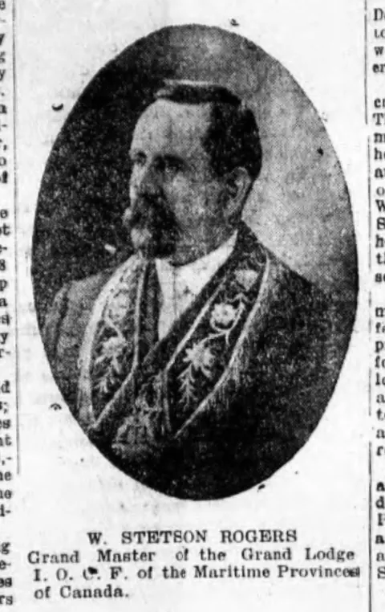

PEI’s Greatest Postcards – #9 – The Card That Started My Collection
My friend Carl, an antiques dealer I’d known for decades, knew I had a weakness for Prince Edward Island postcards. One day he texted me a photograph of four men in a horse-drawn carriage. I asked if he could put a name to any of them. “Me identify lodge members from 1908! Hmm?” he wrote back. The one who caught my eye was the bareheaded passenger on the right. I had no idea it was going to get me collecting Prince Edward Island postcards.
There were clues in the other pictures Carl sent. A group had posed on the steps of Province House. Someone had written “1908” under one print. Another had the initials I.O.O.F. and the name Charlottetown. Thanks to a tip from Harry Holman, I knew where to take those clues. I started turning the pages of the old Charlottetown Guardian on Island Newspapers.


Thirty-three minutes after I asked Carl the question, I had a name to send him. W. Stetson Rogers. There he was on the front page, his name printed neatly underneath his portrait. He was Grand Master of the Grand Lodge of the Independent Order of Odd Fellows of the Maritime Provinces of Canada. I’ve kept the clipping. Compare the bareheaded man on the right of the carriage with the man wearing the lodge collar in the newspaper portrait.
Which gathering had come to the Island?
The word “Grand” and the initials “I.O.O.F.” could take a searcher a good deal farther afield than necessary. The office printed underneath Rogers’s newspaper portrait is the clue to the scale of the occasion. He was Grand Master for the Maritime Provinces. Charlottetown was receiving a regional governing body of the Independent Order of Odd Fellows. The paper reported elections and meetings as well as the things that a man carrying a camera could readily show. Its August 12 front-page heading names the Rebekahs as well as the Grand Encampment. A carriage full of men and a room full of officers are only parts of the gathering.
Read the papers across several days and they answer different questions. Wednesday’s report announced a parade and gave notice of a concert in the evening. Thursday’s headline told its readers that the Odd Fellows had decorated the graves of their comrades. The Friday clipping in my original set of notes is already talking about the visitors leaving. If all I had were a carriage and a line of people carrying flowers, I would be very wary of assigning them an occasion. Here an Island newspaper supplies a purpose and a sequence, quite independently of anything someone later pencilled on an album page.
What the marchers carried
The grand gathering was in August 1908. On Wednesday the 12th, the Guardian announced the parade and the decoration of graves. On Thursday it reported what the visitors had done. That explained a detail in the later photographs. Look at the men walking past the fence in number 15. Those are flowers in their hands. Look back a few cards and you can follow them through town, past spectators standing under shop awnings. Two boys got so close to Bayer’s camera in number 8 that their faces came out in a blur. The Guardian for August 13
It took more than the look of the prints to identify the photographer. The little numbered cards don’t all carry a maker’s line. When I asked Carl about the attribution he sent me a view of a larger group photograph that came with them. It was mounted on an ivory-coloured mat. Stamped on the mat was the name I wanted, Bayer of Charlottetown.
The photographer was J. A. S. Bayer. The Saturday paper preserved the moment the pictures went on sale. Johnson & Johnson, the druggists, had a sample card in their window. Members could order views of the procession and of the group on the Provincial Building steps. The firm urged them to hurry because some negatives could not be duplicated. Imagine standing at that window on August 15 and picking out your own face. The August 15 issue
A separate item in the same edition mentions a group of about four hundred and photographs of visiting groups from Saint John and Fort Fairfield, Maine. It also credits Bayer with the photographs that had appeared in the Wednesday paper. That gives us a local photographer providing pictures to the press, organizing hundreds of people for group portraits and selling prints through a drugstore, all in connection with one event. The advertisement offers views of the procession and the Provincial Building. It gives no numbered checklist. The sixteen numbers we can actually follow belong to the surviving cards.
Bayer’s working life can be traced a little farther than the imprint. The Public Archives records that he had worked for Gauvin, Gentzel & Co. and that by 1909 he had his own business at 127 Grafton Street, employing the young Oliver Craswell. Their surviving collection includes large glass negatives of city councillors, school groups and sports teams. A photographer able to fit the fraternity on the Province House steps had a very practical skill to offer Charlottetown. He also put his name to the fox train in this series and to the Tunnel Post Card. The prints here explain why his name started catching my eye elsewhere. The negatives are in the Public Archives’ Bayer and Craswell fonds, accession 2675.
The sixteen companions to the carriage
Bayer’s sequence runs from 1 to 16. The carriage print makes seventeen and carries no number. Select any picture to open its catalogue record.
 No. 1 · 0110
No. 1 · 0110 No. 2 · 0111
No. 2 · 0111 No. 3 · 0112
No. 3 · 0112 No. 4 · 0113
No. 4 · 0113 No. 5 · 0114
No. 5 · 0114 No. 6 · 0115
No. 6 · 0115 No. 7 · 0116
No. 7 · 0116 No. 8 · 0117
No. 8 · 0117 No. 9 · 0118
No. 9 · 0118 No. 10 · 0119
No. 10 · 0119 No. 11 · 0120
No. 11 · 0120 No. 12 · 0121
No. 12 · 0121 No. 13 · 0122
No. 13 · 0122 No. 14 · 0123
No. 14 · 0123 No. 15 · 0124
No. 15 · 0124 No. 16 · 0125
No. 16 · 0125
The last views have one particularly useful landmark for reading the carriage picture. In number 15, the spectators sit along a fence with open ground and a track rising behind them. Find the same fence line and rising track above the horse-drawn carriage in 0126. The undated carriage print fits into the outdoor sequence even before the newspaper supplies Rogers’s face. I haven’t assigned the unnumbered carriage a position before or after number 16.
Three later additions to my collection put the same event back in my hands. One is another print of the carriage. Turn it over and someone has pencilled in Charlottetown, 1908, Bayer, and the numbers of the two other pictures that went with it. Sure enough, the other two prints match numbers 12 and 15 in the sequence above. The newspaper coverage and the clearly pencilled 1908 on the back of the duplicate carriage establish the year of the photographs. The pencilled back, 3086 · Another print of number 12, 3087 · Another print of number 15, 3088
One more card belongs beside them, with a small reservation about its date. It’s a colour view of the Provincial Building. Turn it over and a correspondent giving a Marysville, New Brunswick, return address has written that the Odd Fellows held their Grand Lodge session on the Island about two weeks earlier. There is no postmark or written year. It makes a particularly apt companion to the 1908 cards. The message alone would be a slender basis for putting its writer in Bayer’s procession. After all the newspaper coverage of elections, parades and ceremonies, he gives his own verdict in five words. “We had a good trip.” The visitor’s card, 0516

I still think about that first half-hour. Carl sent me a carriage full of strangers. By the time I got back to him I knew one man’s name, what had brought him to Charlottetown and what he looked like with his hat off. That’s what got me collecting. I wanted to turn over the next postcard and see who else was there.